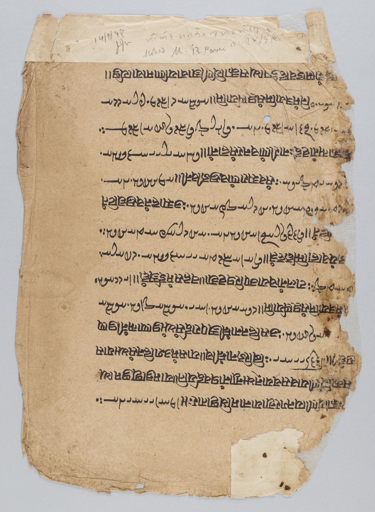

En la cueva primera de Qumrán apareció un rollo con las reglas de una comunidad: cómo se entra, cómo se juzga, cómo se reparte el pan. Y en medio de ese reglamento hay un tratado que no habla de nada práctico. Explica que Dios puso en el hombre dos espíritus, y que en uno de los dos camina cada uno hasta el final de los tiempos.
Los llama el rûaḥ hā-ʾĕmet, el espíritu de la verdad, y el rûaḥ hā-ʿawel, el espíritu de la iniquidad. Los pone bajo el mando de dos figuras —el Príncipe de las Luces y el Ángel de la Oscuridad— y reparte a la humanidad entera entre los hijos de la luz y los hijos de la iniquidad. Luego enumera las virtudes de unos y los vicios de otros, y anuncia que al final Dios destruirá la iniquidad para siempre.
Cualquiera que haya oído hablar del zoroastrismo reconoce el esquema al instante. Y de ese reconocimiento inmediato ha salido una de las afirmaciones más repetidas sobre el origen del diablo. Merece la pena examinarla despacio, porque el examen es más interesante que la conclusión.
El detalle que lo cambia todo
Antes de mirar a Persia hay que leer bien el texto de Qumrán, y hay una frase que casi nunca se cita. En la columna III, el Tratado dice que Dios creó los espíritus de la luz y de la oscuridad. Los dos. El malo también.
Eso convierte el dualismo de la Regla de la Comunidad en algo muy distinto de lo que parece a primera vista. No hay dos principios coeternos enfrentados desde el origen del mundo: hay un solo Dios que crea a los dos contendientes y que decide de antemano el resultado. Es un dualismo creacional y subordinado. La oposición es real, dura, y organiza la vida entera de la comunidad; pero está montada dentro del monoteísmo, no contra él.
Ésta es la diferencia estructural más importante de todo el capítulo, y conviene tenerla presente antes de comparar con nada.
Belial, o cómo un sustantivo se convierte en un nombre
El adversario tiene nombre en los textos de Qumrán, y el más frecuente no es Satán: es Belial. Aparece en la Regla de la Guerra, en la propia Regla de la Comunidad, en el Florilegio, en el Documento de Damasco y en las bendiciones y maldiciones de la comunidad.
Lo interesante es de dónde sale. En la Biblia hebrea, bəliyyaʿal no es un nombre propio: es un sustantivo abstracto que significa algo así como «inutilidad» o «vileza», y funciona en construcciones como «hijo de vileza» —así llaman a Nabal en 1 Samuel 25:17— o «torrentes de perdición», en 2 Samuel 22:5 y en el salmo 18. Es una palabra, no un personaje.
Entre esa palabra y el Belial de Qumrán hay un proceso que en esta serie va a repetirse hasta volverse familiar: un sustantivo común se hipostatiza, se endurece, se convierte en el nombre propio de un ser. Le pasó a ha-satán, que era un cargo —el acusador— antes de ser alguien. Le pasará a helel, que era el planeta Venus antes de ser Lucifer. Y le pasó a bəliyyaʿal, que era la vileza antes de ser el príncipe de la oscuridad. El mecanismo no es una teoría: es el patrón mejor documentado de toda esta historia.
Alrededor de Belial hay más nombres —Melki-reshaʿ, «rey de maldad», que es el antónimo exacto de Melquisedec; Mastema, en el libro de los Jubileos; el Ángel de la Oscuridad del Tratado— y es probable que designen a la misma figura, aunque probable no es lo mismo que demostrado y aquí no se ha demostrado.
La guerra de los cuarenta años
Si el Tratado explica la doctrina, la Regla de la Guerra la pone en marcha. Es el guion de una guerra escatológica de cuarenta años entre los hijos de la luz y los hijos de la oscuridad: el ejército de Belial y los Kittim de un lado, la comunidad del otro, con formaciones, trompetas, estandartes con lemas y una liturgia para cada fase del combate. Al final interviene Miguel y se decide la batalla.
Es un texto extraordinario y hay que manejarlo con la misma cautela que el resto. El rollo de la cueva primera se data en torno al siglo I a.C., pero las copias de la cueva cuarta muestran recensiones distintas: la obra es compuesta y creció por capas. Poner una fecha precisa a su composición es dar por resuelto, otra vez, lo que no lo está.
Ahora sí, Persia
Judá fue provincia del imperio aqueménida durante dos siglos, del 539 al 332 a.C. Hubo contacto real, administrativo y prolongado, y quedaron pruebas materiales de ese contacto en la propia lengua: pardés —de donde viene «paraíso»—, dat para «ley», raz para «misterio». Palabras iranias en boca judía. Eso no lo discute nadie.
La pregunta es qué más viajó con las palabras. Y para responderla hay que empezar por lo que dicen las fuentes iranias, no por lo que dice el resumen del resumen.

En los Gathas, los himnos más antiguos del corpus avéstico, la oposición fundamental no es Ahura Mazda contra Angra Mainyu. Es Spenta Mainyu contra Angra Mainyu: dos espíritus primordiales que el Yasna 30 presenta como gemelos, que se manifiestan y eligen. Lo que los separa no es su naturaleza: es su elección. Ahura Mazda no es una de las dos partes del combate; es el horizonte dentro del cual ocurre.
Gherardo Gnoli, en la Encyclopaedia Iranica, distingue tres fases sucesivas: el dualismo gático que acabamos de describir; el dualismo zurvanita, donde el Tiempo, Zurvan, pasa a ser el padre de Ohrmazd y de Ahriman —una fase que muestra huellas de la astronomía babilónica y que, en palabras de Gnoli, rebaja a Ahura Mazda al nivel de Angra Mainyu—; y por último el dualismo pahlavi simplificado, Ohrmazd contra Ahriman, dos principios simétricos y frontales.
Y aquí está el problema, dicho con la mayor claridad posible: el Ahriman que todo el mundo compara con el diablo es el de la tercera fase. El simétrico, el autónomo, el coeterno. Y esa fase está atestiguada en la literatura pahlavi de época sasánida, de los siglos III al VII d.C. Es decir: posterior al cristianismo.
La tijera
Llegados aquí, el defensor de la influencia tiene una salida evidente, y es buena: los textos son tardíos, pero las ideas pueden ser mucho más antiguas que los textos que las recogen. La religión irania preislámica transmitió sus escrituras de memoria, palabra por palabra, en familias sacerdotales, durante siglos. El Avesta no se puso por escrito hasta época sasánida, y aun entonces la existencia de un Avesta escrito no transformó de inmediato la práctica de la tradición. Los manuscritos avésticos que se conservan son medievales: el más antiguo, de los siglos XIII o XIV d.C.
La objeción es legítima. Pero fíjate en lo que hace con el argumento, porque es una tijera de dos hojas. Si la influencia viajó por vía oral, entonces por definición no dejó el rastro que permitiría demostrarla —las palabras habladas, escribe Jason Silverman, no se conservan para la historia—. Y si se apela a textos, esos textos son demasiado tardíos para servir de fuente. Cualquiera de los dos caminos deja la hipótesis en el mismo sitio: difícil de probar y difícil de refutar.
Eso no la convierte en falsa. La convierte en algo distinto y más incómodo: en una hipótesis que, con las fuentes que existen hoy, probablemente no se pueda decidir. Y decirlo es más honesto que elegir bando.

¿Se puede demostrar la influencia persa?
Cinco fuentes iranias y tres maneras posibles de que una idea viaje. Quince combinaciones, y cada una con su dictamen. La pregunta no es si el parecido existe —existe—, sino si alguna de estas quince rutas se puede probar.
Quién sostiene qué
Conviene ver el mapa de posiciones, porque la discusión tiene más matices de los que suele atribuírsele.
Su trabajo sobre Qumrán e Irán, desde 1972, es el más serio del lado que defiende la influencia. No argumenta por parecido: argumenta por contacto documentado y por rasgos concretos.
Propone casos concretos de influencia en Ezequiel, Daniel y Enoc. Y es él quien formula con más claridad el problema de la oralidad, que juega contra su propia tesis.
Su artículo de 1985 cuestiona la viabilidad de todo el programa de la investigación de influencias. Sigue siendo el punto de partida obligado del que quiera defenderla.
Muy severo con la práctica de reconstruir el zoroastrismo antiguo a partir de fuentes tardías, que es exactamente lo que hace la comparación popular.
Su libro de 2022 rebaja el vocabulario de «influencia» a «paralelos», y señala como problema central la escasa cantidad y calidad del material textual y las discusiones sobre su fecha.
Muestra que no hay un dualismo qumránico sino varios patrones con historias distintas, lo que hace innecesario postular un préstamo único y masivo.
La formulación de Vicente Dobroruka en su libro de 2022 es la que mejor resume el estado de ánimo actual del campo: sus supuestos, dice, se volvieron más modestos, y a pesar del título de su propio libro, lo que trata son paralelos más que influencia. Apoyándose en Quentin Skinner y en Pocock, advierte contra el uso vago de la causalidad; y con la influencia persa sobre el judaísmo del Segundo Templo, escribe, la palabra temida —«influencia»— es precisamente lo que ocurre.
Hay un dato historiográfico que conviene conocer, porque explica parte del descrédito de la literatura antigua sobre el asunto. El campo de la influencia irania, como documenta Silverman, arrastró durante décadas problemas graves de método, y entre ellos presuposiciones racistas: la idea de una «religión aria superior» influyendo sobre unos «pueblos semitas inferiores». Ese marco contaminó buena parte de los estudios de la generación anterior. No invalida la pregunta —que es legítima y sigue abierta—, pero explica por qué hoy se exige una metodología mucho más estricta a quien la plantea.
Lo que sí se puede decir
Hay una frase que resume el asunto sin traicionarlo por ninguno de los dos lados: hay paralelos; hay contacto histórico; no hay prueba de derivación. Y la naturaleza oral de la transmisión irania hace que esa prueba, en el estado actual de las fuentes, sea probablemente inalcanzable.
A lo que hay que añadir un dato que suele faltar: no hace falta Persia para explicar el dualismo de Qumrán. La doctrina de los dos caminos y de las dos inclinaciones tiene una genealogía judía completa, en el Eclesiástico y en el texto sapiencial de Qumrán conocido como Instrucción, y hay quien sostiene que el Tratado depende literariamente de esos materiales. Jörg Frey mostró además que no hay un dualismo qumránico sino varios patrones distintos —cósmico, ético, psicológico, escatológico, espacial— con historias separadas, lo que desactiva de raíz la idea de un préstamo único y masivo.
Y hay un detalle textual que redondea el cuadro: el propio Tratado parece ser una pieza de origen independiente, incorporada tarde a la Regla de la Comunidad. Charlotte Hempel lo mostró a partir de los manuscritos de la cueva cuarta, donde algunas recensiones de la Regla circulan sin él. El texto que se compara con el zoroastrismo no es el corazón antiguo del reglamento: es un añadido que creció por su cuenta.
Queda entonces un adversario con nombre propio, un ejército de tinieblas y una guerra de cuarenta años, todo ello construido con materiales judíos en un desierto que había sido provincia persa. Lo que no queda es una línea recta desde Ahriman. La serie de Los vecinos imperiales planteó esta misma pregunta desde el lado del imperio; esta entrega la ha llevado hasta las fuentes, que es donde se decide.
En la siguiente, el problema cambia de naturaleza. Ya no será una hipótesis difícil de probar, sino un error que se puede fechar: el momento exacto en que una palabra latina para el planeta Venus se convirtió en el nombre propio del diablo.
Pieza interactiva de la serieEl linaje de una idea
En el grafo, la línea que va de los Gathas al Tratado de los Dos Espíritus es discontinua, y la que iría de Ahriman al diablo cristiano está tachada. Esta entrega explica por qué cada una tiene el trazo que tiene.
Abrir el grafo →Es dato firme el contenido del Tratado de los Dos Espíritus (1QS III,13-IV,26) y su carácter creacional: los dos espíritus los crea Dios. Lo es que bəliyyaʿal no es un nombre propio en la Biblia hebrea sino un sustantivo abstracto, y que su hipostatización es un fenómeno del Segundo Templo tardío. Lo es que en los Gathas la oposición es Spenta Mainyu contra Angra Mainyu y que lo decisivo es la elección, no la naturaleza; y que el Ahriman simétrico y coeterno es característico del zoroastrismo sasánida, de los siglos III al VII d.C. Lo es también que Judá estuvo bajo dominio aqueménida entre 539 y 332 a.C., que hay préstamos léxicos iranios en el hebreo y arameo del Segundo Templo, y que la transmisión de las escrituras iranias fue oral hasta época sasánida.
Debate abierto: la fecha de los Gathas, con una dispersión enorme —de en torno al 1000 a.C. en la datación lingüística tradicional a la época aqueménida en la propuesta de Kreyenbroek—. La fecha de composición del Tratado y de la Regla de la Guerra, que son obras compuestas y de las que sólo se datan bien los manuscritos. Y, sobre todo, la influencia irania misma: Shaked, Hultgård y Silverman la defienden con argumentos serios; Barr, de Jong y Frey la cuestionan; Dobroruka, en 2022, prefiere hablar de paralelos. La posición hoy más común es que la hipótesis es plausible pero no probada y que la explicación interna judía basta para dar cuenta de los datos. Sobre el número exacto de apariciones de Belial en el corpus de Qumrán este artículo no da ninguna cifra, porque no la hemos comprobado en la concordancia.
Nada de esto dice si el dualismo es verdadero o falso, ni si una religión le debe algo a otra en algún sentido que importe para la fe. Describe qué textos hay, de cuándo son y qué se puede sostener con ellos. Y en un caso como éste, decir «no se puede demostrar» no es una manera elegante de decir «es falso»: es la descripción exacta de un problema que las fuentes, tal como han llegado, no permiten cerrar.